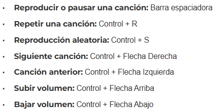

Que es la Usabilidad Web, Importancia, Principios y ejemplos
¿Qué es la Usabilidad Web?
La usabilidad web es un término utilizado para describir la facilidad con la que los usuarios pueden
interactuar con un sitio web y realizar tareas en él de manera efectiva, eficiente y satisfactoria,
utilizando el menor tiempo posible.
La idea es ofrecer una gran experiecia al usuario al interactuar con la interfaz de un sitio web y
abarca
varios factores, incluida la navegación, la estructura de información, la claridad de la
presentación, la velocidad de
carga, la capacidad de búsqueda y la accesibilidad.
¿Por qué es importante la Usabilidad web?
La falta de usabilidad web en una página es la mayor causa de abandono de estas. Redator Rock Content.
Sabemos lo importante que es el tiempo para toda persona, por esa razón la usabilidad web es vital
para el éxito de un sitio web, puesto que nadie quiere perder el tiempo adivinando como funciona
una página web, donde se encuentra lo que se está buscando ni como llevar a cabo una compra.
Entonces,
la duración de carga y lo mal organizado que puede estar la información de un sitio web puede hacer
que
los usuarios, que también son posibles clientes, no lean ni el principio de esta y salgan del sitio
web.
Importancia Usabilidad Web
Los 10 Principios de la Usabilidad Web y ejemplos
Visibilidad del estado del sistema
Este principio establece la importancia de comunicar al usuario lo que está
sucediendo.
Es decir, que estos conozcan el resultados de sus interacciones.
Un ejemplo de no llevar a cabo este principio es cuando un usuario hace click en un botón
de
compra y no sucede nada ni muestra algún mensaje,
esto hace que exista duda y poca credibilidad.
Por otro lado, un ejemplo de buen uso de este principio es cuando se descarga un archivo
y
se muestra una
animación que muestra lo que está sucediendo, como en la imagen.
Consistencia entre el sistema y el mundo real
Este principio indica que el sitio web debe ser entendible para el usuario, utilizando
palabras
y expresiones conocidas, de esta manera no tendrá que interpretar ni buscar que
significa
algún término
del sistema.
Un error común es el 404, que significa que la página no se encontró por 'x' o 'y' razón
y no
se puede cargar, si
solo se muestra este número en la pantalla probablemente el usuario no va a comprender
lo
que está sucediendo.
Por tanto, lo mejor sería mostrar un mensaje que se pueda entender fácilmente, como en
la
imagen siguiente.
Control y libertad del usuario
Este fundamento establece que si un usuario quiere revertir una acción, ya sea por error
o
porque ya no
desea llevarla a cabo, debe existir una opción de salida, de esta manera puede
tener el control de deshacer el estado no deseado en el que se encuentra.
Hay ocaciones donde luego de haber enviado un correo o mensaje, el usuario prefiere
deshacer
esta acción,
por tanto, debe existir una opción.
Consistencia y estándares
La idea de este principio es debido a que existen muchas páginas por donde navegan los
usuarios, por lo
tanto, mantener el estandár de iconos, posición de logos, menú, entre otros elementos ya
reconocidos es esencial
para mantener al cibernauta en el sitio web.
Un ejemplo de aplicar este principio es mantener el icono de la lupa en un botón de
buscar.
Prevención de errores
Este principio plantea la idea de llevar a cabo medidas que eviten la ocurrencia de
errores,
de este modo se evitará
tener que corregirlos y mostrar mensajes de errores.
Como se ve en la imagen, dar asistencia o alternativas en caso de equivocaciones es una
manera de cumplir con el
fundamento establecido.
Reconocimiento en lugar de recuerdo
Este principio se enfoca en la idea de que los sistemas deben estar diseñados de manera
que los usuarios puedan reconocer las opciones disponibles en lugar de tener que
recordar
información.
Por ejemplo, colocar los pasos de una compra en un tipo línea de tiempo
e indicar por cual ya se ha pasado y en cual
está en ese momento.
Flexibilidad y eficiencia de uso
Este principio beneficia a los usuarios avanzados, ya que la idea de este es que existan
atajos y personalizaciones
para los más avanzados y así agilizar las tareas de manera eficiente y fácil.
En la siguiente imagen se puede observar algunos atajos de teclado en caso de estar
en algún reproductor de música.

Diseño estético y minimalista
Cada elemento extra compite con la información relevante y disminuye su
visibilidad Diego Amorin
Este fundamento indica que si la información no es relevante o es poco concurrida, mejor
no
incluirla. Se debe basar en que necesita el usuario.
Google solo muestra lo que busca el usuario al ingresar.
Ayude a los usuarios a reconocer, diagnosticar y recuperarse de errores
Este principio se enfoca en manejar correctamente los errores dentro de un sistema,
asegurándose de que los usuarios no solo se den cuenta de que ha ocurrido un error, sino
que
también entiendan por qué sucedió y cómo pueden solucionarlo fácilmente. En la imagen se
muestra un ejemplo
Ayuda y documentación
Lo ideal es que un sistema no requiera explicaciones adicionales. Sin embargo, a veces
es
necesario ofrecer documentación para ayudar a los usuarios a entender cómo realizar sus
tareas.
Los pequeños tutoriales para aprender a usar una aplicación es un ejemplo de este
principio.